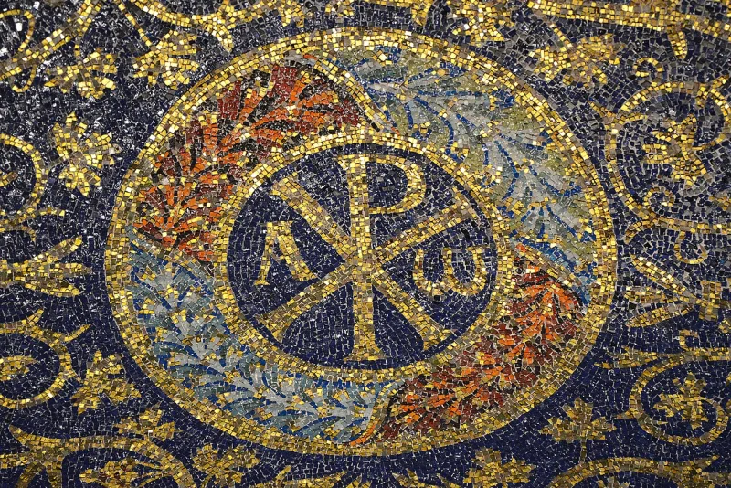

LDS scholars have a real answer here. Say so before your friend does.
Greek personal names in a Hebrew colony. Timothy and Jonas at 3 Nephi 19:4.
Lachoneus at 3 Nephi 1:1, a name meaning the Laconian. And the risen Jesus calling himself "Alpha and Omega" at 3 Nephi 9:18.
Alpha and omega are the first and last letters of the Greek alphabet. The phrase comes from Revelation 1:8.
A colony that left Jerusalem in 600 BC and wrote in reformed Egyptian had no Greek contact.
Hugh Nibley and Stephen Ricks point to real history. From the mid-600s BC, Ionian and Carian mercenaries and traders served in Egypt, including in Necho II's army, and moved across the Levant.
Greek names could reach Lehi's people, or more easily the Mulekites. They add that Timothy, Jonas and "Alpha and Omega" may be the translator's English stand-ins for Nephite equivalents.
Genuinely arguable, and this is a small case. The mercenary history is real.
Substitution works well for "Alpha and Omega." Lachoneus as a personal name, and the exact match with Revelation, still fit an 1829 writer more easily. Grant Palmer made that case.
"Where would a Nephite have picked up the Greek alphabet?"

Greek soldiers served Egypt from the 600s BC, so Greek names could reach Lehi's world.
Hugh Nibley and Stephen Ricks argue that Greeks were already in Lehi's world. From the mid-600s BC, Ionian and Carian soldiers and traders served Egypt. They fought in the army of Necho II and worked across the Levant.
So a Greek name could reach Lehi's people, and more easily the Mulekites. There is a second line too. 'Timothy', 'Jonas' and 'Alpha and Omega' may be the translator's English stand-ins for Nephite names and sayings.
A small case, and the Greek trade history is real; Lachoneus still fits 1829 better.
The mercenary reply rests on real history. Greeks were in Egypt and the Levant in the 600s BC. And the stand-in reading works well for 'Alpha and Omega'.
Two things still fit an 1829 writer better. One is 'Lachoneus' as a personal name. The other is wording that matches Revelation exactly. Grant Palmer made that case.
Neither side has a decisive case here, and this is a small point.